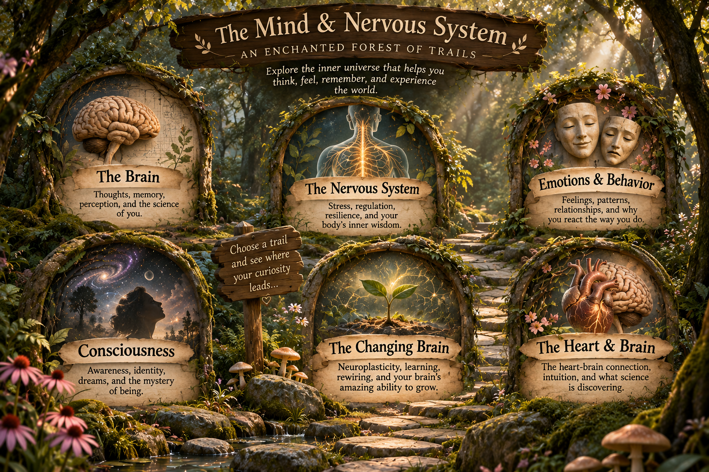
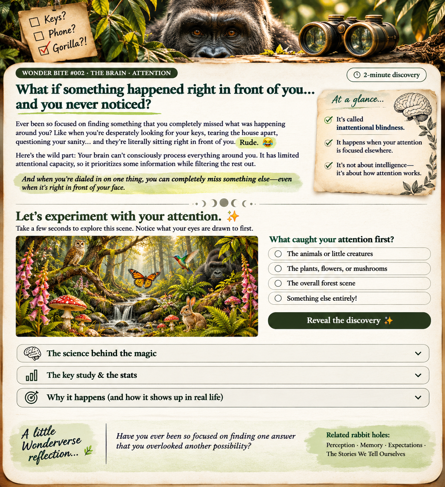

Tap “Begin Your Journey,” “I'm Just Curious,” or The Mind portal to enter. Other worlds are coming later.

✨ Tap the stone arch labeled “The Brain” to follow our first trail. The other five are preserved for future discoveries.
The Brain · Perception · Wonder Bite #001
What if you're not seeing the world exactly as it is?
Your eyes collect light, but your brain does much of the work of turning that information into the world you experience.
It combines incoming signals with context, expectations, and past experiences to help you make sense of what's around you.
That's why two people can look at the same ambiguous image and see completely different things.
Your perception isn't a perfect recording of reality. It's your brain's best interpretation of the information available.
🌱 Something to wonder about…
How much might your expectations influence what you notice?
📖 A little deeper: the science
Perception depends on how the brain organizes incoming sensory information and uses context and prior experience. Predictive processing is one influential family of scientific models for how prior expectations interact with sensory signals; researchers continue to investigate its scope and mechanisms.
None of this means that the outside world is imaginary, or that all interpretations are equally accurate.
Research links and recommended books will be added before publication.
Interactive discovery · 1–2 minutes
Two Ways to See
Look at the image. What do you notice first?
Both interpretations are in the same image!
The dark shapes can appear as faces. The light space between them can appear as a vase. Nothing in the picture changes—only how you organize what you see.
Try this: Look again and deliberately switch between the two interpretations.
🧠 Explore the science behind the magic
This demonstrates figure–ground organization, a classic topic in Gestalt psychology. Our visual system distinguishes objects (figures) from their surroundings (ground). In an ambiguous image, different interpretations can alternate, an example of bistable perception.
This is evidence that perception actively organizes information—not evidence that reality itself is imaginary.
🌿 A little something to wonder about…
If the same image can support two experiences, what might this tell us about how we interpret more complicated situations?
The key study & the stats 📊
Same picture. Different reality. Your brain has some explaining to do. 😂
Remember our vase-or-two-faces illusion?
Here's the wild part: scientists can study people watching the exact same image while their perception switches between two interpretations.
A 2017 RUBIN VASE RESEARCH FINDING
~6–7 seconds
In one experiment, researchers recorded average reported switching frequencies of about 0.14 Hz for faces and 0.16 Hz for the vase—roughly one reported switch of each type every 6–7 seconds.
These are study-specific averages, not how quickly everyone's perception switches.
Now think about that.
The picture didn't have to change.
The person didn't have to move.
Yet their experience of what they were seeing could change.
Researchers call this bistable perception, and they've found that perceptual switching is influenced by several factors, including attention and how the visual stimulus is presented.
A little Wonderverse question ✨
If your interpretation of a picture can change without the picture changing…
What might happen when you look at an old situation from a completely different perspective?
For the curious souls whose brains just said, “Okay, but HOW does that work?!” 😂
You don't have to become a neuroscientist to explore this. But if your curiosity is getting a little out of hand, we've got some doors for you.
THE ORIGINAL RESEARCH 🔬
Same picture. Different brain activity.
Scientists studied what happened in people's brains as their perception shifted between faces and a vase. Spoiler: your visual system is doing a whole lot more than taking pictures.
What if curiosity isn't about finding the one perfect answer?
What if sometimes it's about discovering a question you never thought to ask?
Stay weird. Stay curious. Keep wondering. 🐇✨
The Brain · Attention · Wonder Bite #002
What caught your attention first?
Take your time exploring the enchanted forest. What stands out to you?

OHHH, you noticed the little creatures! 🦉🦋
Your eyes went straight to the living things. Interesting…
Birds have long symbolized freedom, perspective, and possibility. Butterflies often represent transformation and change. And owls? Wisdom, mystery, and seeing what others overlook.
Maybe one of those ideas speaks to you right now. Or maybe you just like adorable woodland creatures. Also valid. 😂
A little question for your curious brain: Which creature caught your attention, and what does it represent to you?
Well, hello there, forest witch. 🌿🍄
You noticed the plants, flowers, or mushrooms!
Symbolically, trees often represent roots, stability, and growth. Flowers can represent beauty and becoming. Mushrooms? Hidden connections, transformation, and the fascinating life happening beneath the surface.
Maybe something about growth resonates with you right now.
Or maybe you're just mentally redecorating your backyard. 😂
A little question for your curious brain: Is there something in your life that's growing, changing, or waiting to bloom?
OHHH, you took in the whole enchanted mess! 🌲✨
Instead of one little detail, the entire scene caught your attention.
Forests have long symbolized mystery, exploration, the unknown, and the journey inward.
Maybe you're drawn to the adventure of not knowing what's around the next corner.
Or maybe your brain said, “There's a lot going on here, and I need a minute.” 😂
A little question for your curious brain: Does the unknown feel exciting, intimidating, or a little of both?
Well, look at you, refusing to follow instructions. 😂🗝️
You noticed something we didn't even put on the list.
I LOVE that.
Sometimes the most interesting discoveries happen when we stop looking for the answers someone else told us to find.
Maybe the thing that caught your attention has a personal meaning that nobody else would understand.
A little question for your curious brain: What did you notice, and why do you think it stood out to you?
But wait… there's a gorilla in the room. 🦍
Now take another look at the forest.
Did you spot our sneaky little gorilla?
That's the fun part. We can all look at the same picture, notice different things, and still have more to discover.
The symbolism is an invitation to reflect, not a verdict about who you are.
Curious about the science? 🧠
The science behind the magic 🧠
Our brains cannot give every detail around us equal attention. When we focus on one thing, we may overlook something unexpected, even when it is right in front of us. Researchers call this inattentional blindness.
It is not a measure of intelligence or how observant you are. It is one surprising consequence of having limited attention.
The key study & the stats 📊
In a well-known experiment by Daniel Simons and Christopher Chabris (1999), participants watched a video and counted basketball passes. Roughly half failed to notice an unexpected person in a gorilla suit walking through the scene, depending on the viewing condition.
Our enchanted forest is a playful illustration of the idea, not a recreation of the experiment or a scientific test of your attention.
Attention helps us make sense of a busy world by prioritizing some information. The trade-off is that other details can slip past us. It can happen when we are absorbed in a conversation, searching for our keys, or looking for one specific thing in a crowded room.
Wondering what you missed can be an invitation to look again — not a reason to judge yourself.